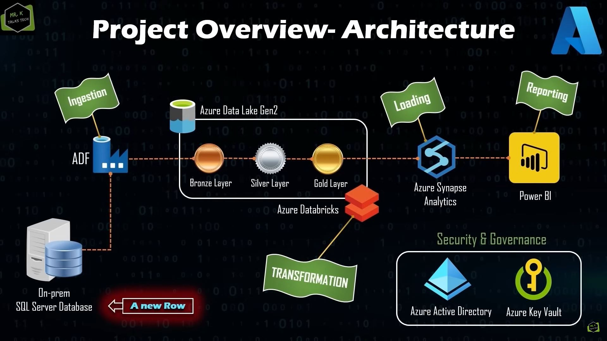

End to End Azure Data Engineering Real-Time Project

In this project we designed and implemented a scalable data pipeline leveraging Azure Data Lake Gen2, Azure Synapse Analytics, and Azure Databricks. This project involved ingesting raw data, transforming it through a medallion architecture (Bronze, Silver, and Gold layers), and generating actionable insights for reporting using Power BI.